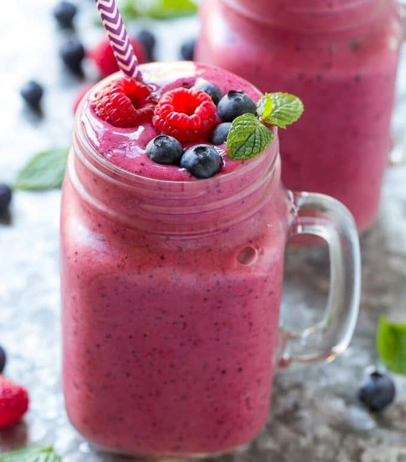

Berrylicious Smoothie

Description
If you are anything like me, there are days where you want a quick
meal that is light and healthy. On these days, nothing beats a cold
and creamy berry smoothie. As long as you have a blender (which I
assume most of you do) these smoothies are the perfect meal to lift
your spirits and keep you going the rest of the day.
Ingredients
- 1/2 cup frozen blueberries
- 1/2 cup frozen raspberries
- 1/2 cup frozen blackberries
- 1 cup oat milk
- (Optional) 2 Tbsp creamy peanut butter
Steps
- In a blender, place the frozen berries and oat milk.
- Let the berries thaw in the milk for 1-2 minutes.
- Once slightly thawed, begin blending the berries.
- If you want to add a bit of protein to your smoothie, add peanut
butter once berries are partially blended.
- Continue blending until completely smooth.